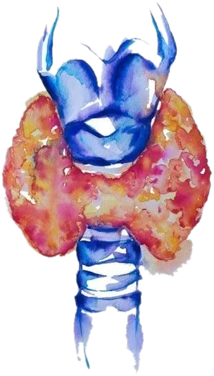
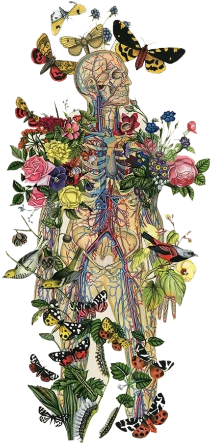

reel 01 — the medical file
Medicine
Medicine is more than diagnosis and treatment plans. It is listening closely, learning endlessly, and showing up for people in their most vulnerable moment.
Level 5 · MBBCh · New Mansoura University · since September 2022
reel 02 — organ plates

Heart
four chambers, one rhythm
love — [One honest sentence about why the heart pulls you in.]
learned — Infective endocarditis, taught as a tutorial in Medicine 1, and antiplatelet therapy in chronic coronary syndrome through a ticagrelor vs clopidogrel study in progress.
met — Cardiology rotation at Meniet El-Nasr Central Hospital (October 2026): ECG, echo, central line, emergency defibrillation. ESC Council on Cardiovascular Genomics.

Lungs
the tree that breathes
love — [One honest sentence about the lungs.]
learned — A case of COPD exacerbation with underlying myxedema coma, presented as a Semester 4 grand round.
met — Chest teaching within Internal Medicine, Basic Life Support (NHCPS, 2023), open chest drain insertion on the Incision Academy course.

Brain
where the questions start
love — [One honest sentence about the brain.]
learned — Pediatric brain tumors (tutorial), peripheral neuropathy (The Hidden Pain), and how little the public knows about multiple sclerosis.
met — Semester 5 grand round, a risk assessment reaching 100+ students from 10 Egyptian universities, MS awareness study across Egypt, Jordan and Libya.

Kidneys
quiet, constant work
love — [One honest sentence about the kidneys.]
learned — Chronic kidney injury, told through a grand round with a patient and doctor role play, and how blood pressure, heart and kidneys feed into each other.
met — Semester 5 grand round (considered one of the best in the round). Hypertension and cardio-renal-metabolic workshop, Novartis Egypt, 2025.

Endocrine
small glands, big effects
love — [One honest sentence about hormones.]
learned — Posterior pituitary disorders, taught as a tutorial in Medicine 2.
met — PASID congress (Pan Arab Society for Interventional Endocrinology and Diabetes Technology, 2025).

Blood
the river that carries it all
love — [One honest sentence about hematology.]
learned — Recent innovations in Hodgkin lymphoma diagnosis, presented as a poster at the university hematology conference (12 June 2023).
met — Hematology within Internal Medicine and Pediatrics (hematology and BM transplant).

Reproductive
where autonomy and care meet
love — [One honest sentence about women’s health.]
learned — Ovarian cancer, taught as a tutorial in Gynaecology, and why informed choice in childbirth matters.
met — Gynaecology and Obstetrics rotation (May to June 2026), the C-section reduction project, Novartis female health workshop.
reel 03 — teaching
Five tutorials I prepared and taught as slide decks, each part of a course.
reel 04 — things i built
Caprini risk score assessment
online tool
A tool I developed for venous thromboembolism prophylaxis. It gives a Caprini score and the degree of prophylaxis recommended.
reel 05 — grand rounds & posters
Grand round.
Grand round, case report.
Grand round, plus a risk assessment for peripheral neuropathy based on the daily habits of medical students. It reached 100+ participants from 10 universities in Egypt.
Grand round with a patient and doctor role play. Considered one of the best in the round.
Poster presentation at the university hematology conference (12 June 2023).
reel 06 — research in progress
Study design, questionnaire development, literature review.
Literature review, study framework, manuscript preparation.
reel 07 — where my mind goes